Module 08 · Cận Chernoff lượng tử
Tốc độ mũ của lỗi phân biệt trạng thái: Audenaert, Nussbaum–Szkoła, Calsamiglia
- Định nghĩa Q và tốc độ mũ ξ
- Trình bày chứng minh hai nửa của cận Chernoff lượng tử
- Tính Q cho BPSK thuần, qubit, trạng thái Gauss nhiệt và kênh FSO
- Tránh các bẫy về fading, quy ước fidelity và hằng số
📚 Tài liệu nguồn của module (đã xác minh bằng nội dung từng file)
| File trong kho | Bài báo (đã xác minh bằng nội dung) | Trang | Trạng thái | Đã dùng vào module |
|---|---|---|---|---|
| Audenaert_2007_Quantum_Chernoff_Bound.pdf | The Quantum Chernoff Bound K. M. R. Audenaert, J. Calsamiglia, R. Muñoz-Tapia, E. Bagan, Ll. Masanes, A. Acín, F. Verstraete · 2007 · Phys. Rev. Lett. 98, 160501 (arXiv:quant-ph/0610027) | 7 | Đã đọc, khớp tên bài | Đọc Eq. (1)-(6), Định lý 1, Fig. 1; đã trích 3 hình. |
| Calsamiglia_2008_Quantum_Chernoff_Information.pdf | The quantum Chernoff bound as a measure of distinguishability between density matrices: application to qubit and Gaussian states J. Calsamiglia, R. Muñoz-Tapia, Ll. Masanes, A. Acín, E. Bagan · 2008 · arXiv:0708.2343v2 [quant-ph] | 17 | Đã đọc, khớp tên bài | Đọc Eq. (1)-(28), (77), (94), Fig. 1-3. |
| Nussbaum_Szkola_2009_Chernoff_Lower_Bound.pdf | The Chernoff lower bound for symmetric quantum hypothesis testing M. Nussbaum, A. Szkoła · 2009 · Ann. Statist. 37(2), 1040-1057 | 18 | Đã đọc, khớp tên bài | Đọc Theorem 2.2, Eq. (4)-(13); đã trích 3 hình. |
Bài giảng (slide)
Dùng phím ← → hoặc nút bấm; nút ⛶ để trình chiếu toàn màn hình.
Phân biệt hai giả thuyết bằng một lần đo
- \(\pi_0,\pi_1\)xác suất tiên nghiệm, tổng bằng 1
- \(E_0,E_1\)hai phần tử POVM, \(E_0+E_1=\mathbb 1\)
Nguồn: Audenaert et al., arXiv:quant-ph/0610027 (2007), phần "Problem formulation", tr. 2. Phép đo tối ưu chiếu lên phần dương của \(\pi_1\rho_1-\pi_0\rho_0\).
Cận Chernoff cổ điển và tốc độ mũ của lỗi
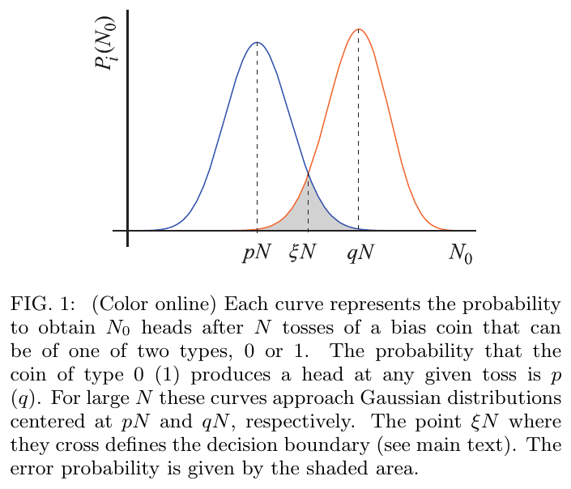
Nguồn: Calsamiglia et al., arXiv:0708.2343 (2008), Fig. 1, tr. 3
- \(N\)số lần quan sát độc lập
- \(C\)thông tin Chernoff
Bất đẳng thức min{p,q} ≤ p^s q^(1−s)
Nếu \(p\le q\) thì \(q^{1-s}p^{s}\ge p^{s}p^{1-s}=p\). Tổng theo \(b\) rồi lấy luỹ thừa \(N\) vì các lần quan sát độc lập (Calsamiglia et al., Eq. (1)-(2), tr. 2 và 3).
Ví dụ đồng xu lệch: thông tin Chernoff bằng số
Đồng xu loại 0 ngửa với xác suất \(p=0{,}3\), loại 1 với \(q=0{,}6\). Ngưỡng quyết định và thông tin Chernoff:
- \(\bar p,\bar q\)1−p, 1−q
- \(s^*\)điểm cực tiểu, bằng 0.494
| N | \(P_e\) đúng | cận \(\tfrac12e^{-NC}\) | tỉ số |
|---|---|---|---|
| 10 | 0.1583 | 0.3103 | 0.51 |
| 50 | 0.01416 | 0.04602 | 0.31 |
| 100 | 9.838e-04 | 0.004235 | 0.23 |
Tính bằng phân bố nhị thức; cận luôn lớn hơn giá trị đúng và tỉ số tiến về 0 theo kiểu đa thức, nhưng tốc độ mũ trùng nhau.
Cung Hellinger và entropy tương đối
- \(K(p\|q)\)\(\sum p\ln(p/q)\)
- \(s^*\)điểm cách đều \(p_0\) và \(p_1\)
Nguồn: Calsamiglia et al., arXiv:0708.2343 (2008), Eq. (4)-(5), tr. 3; Nussbaum, Szkoła, Ann. Statist. 37(2), 2009, Eq. (4)-(5), tr. 6.
Luỹ thừa ma trận dương và dạng tổng của Q_s
- \(\lambda_i\)trị riêng của \(\rho\)
- \(\mu_j\)trị riêng của \(\sigma\)
- \(|U_{ij}|^2\)ma trận hai-ngẫu-nhiên (doubly stochastic) chồng lấn hai cơ sở
Đây chính là cách widget ở cuối bài tính \(Q_s\): phân rã Jacobi cho từng ma trận rồi cộng. Nguồn: Audenaert et al., arXiv:quant-ph/0610027 (2007), phần "Properties", tr. 3.
Nhiều bản sao: tích tensor và Helstrom N lần
Ma trận \(d^N\times d^N\) lớn rất nhanh, nên công thức đúng chỉ dùng được cho \(N\) nhỏ; vế phải của đẳng thức dưới chỉ cần ma trận \(d\times d\) (Audenaert et al., tr. 2; Calsamiglia et al., Eq. (13) và (20)).
Định nghĩa cận Chernoff lượng tử
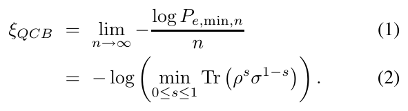
Nguồn: Audenaert et al., arXiv:quant-ph/0610027 (2007), Eq. (1)-(2), tr. 2
- \(Q\)dạng không logarit, \(0\le Q\le1\)
- \(\xi_{QCB}\)tốc độ mũ của lỗi tối ưu
Bất đẳng thức Audenaert: định lý trung tâm
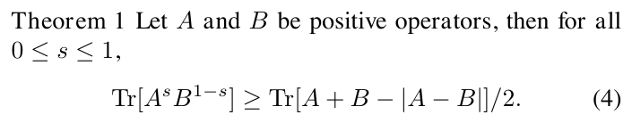
Nguồn: Audenaert et al., arXiv:quant-ph/0610027 (2007), Theorem 1, Eq. (4), tr. 2
Cận trên ½Q^N cho mọi cặp trạng thái
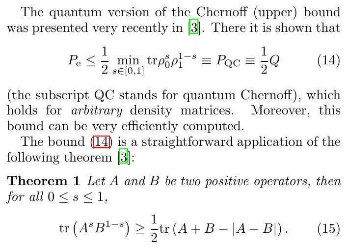
Nguồn: Calsamiglia et al., arXiv:0708.2343 (2008), Eq. (14)-(15), tr. 4
Với \(s=\tfrac12\) có chứng minh ngắn: chọn \(\tilde E_1=\{\rho_0^{1/2}-\rho_1^{1/2}\lt0\}\) rồi dùng \(\mathrm{Tr}[\rho_0^{1/2}\rho_1^{1/2}]\) (Eq. (16)).
Cận dưới của Nussbaum và Szkoła
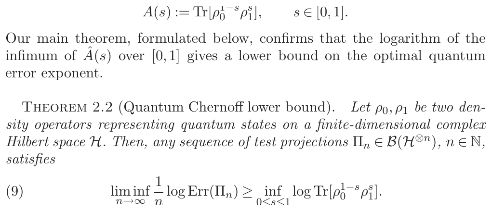
Nguồn: Nussbaum, Szkoła, Ann. Statist. 37(2), 2009, Theorem 2.2, Eq. (9), tr. 7
Chứng minh cận dưới: đưa về bài toán cổ điển
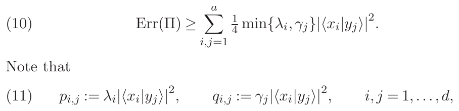
Nguồn: Nussbaum, Szkoła, Ann. Statist. 37(2), 2009, Eq. (10)-(11), tr. 9
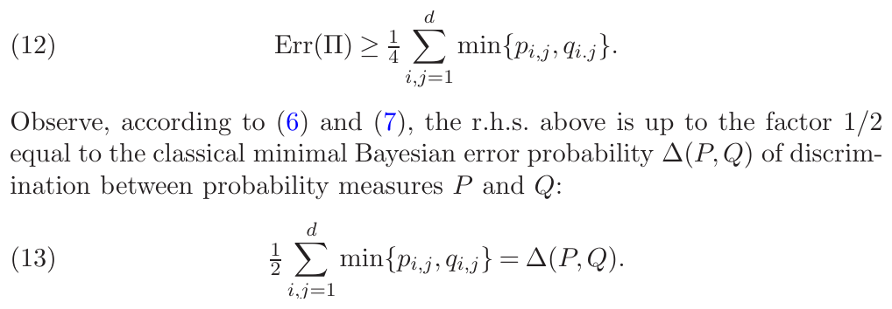
Nguồn: Nussbaum, Szkoła, Ann. Statist. 37(2), 2009, Eq. (12)-(13), tr. 9
Tính lồi theo s: chỉ có một cực tiểu
Vì \(Q_s\) lồi trên \([0,1]\), cực tiểu địa phương cũng là cực tiểu toàn cục; có thể dò bằng tìm kiếm vàng hay tam phân (Audenaert et al., "Convexity in s", tr. 3).
Kẹp khoảng cách vết bằng Q
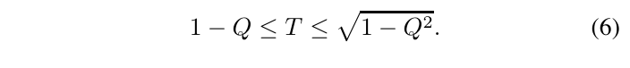
Nguồn: Audenaert et al., arXiv:quant-ph/0610027 (2007), Eq. (6), tr. 3
- \(T\)\(P_{e}^{\min}=\tfrac12(1-T)\) khi tiên nghiệm bằng nhau
Hệ quả một bản sao: \(\tfrac12\bigl(1-\sqrt{1-Q^2}\bigr)\le P_e\le\tfrac12 Q\).
Xác suất tiên nghiệm không đều
Với BPSK thuần, \(n=1\), \(\pi_0=0.8\): \(P_e\) đúng \(=0.02214\), cận Chernoff \(=0.02707\), còn tiên nghiệm bằng nhau cho \(0.03506\). Nguồn: Calsamiglia et al., Eq. (25), tr. 5; Audenaert et al., arXiv:quant-ph/0610027 (2007), tr. 2.
BPSK thuần: Q và Helstrom đúng theo N
- \(\bar n=|\alpha|^2\)số photon trung bình mỗi xung
| N | \(P_e\) đúng | cận \(\tfrac12Q^N\) | tỉ số |
|---|---|---|---|
| 1 | 0.03506 | 0.06767 | 1.93 |
| 2 | 0.0046 | 0.009158 | 1.99 |
| 3 | 6.201e-04 | 0.001239 | 2.0 |
| 5 | 1.135e-05 | 2.270e-05 | 2.0 |
Hai qubit r = 0,8, góc 90°: tính Q từng bước
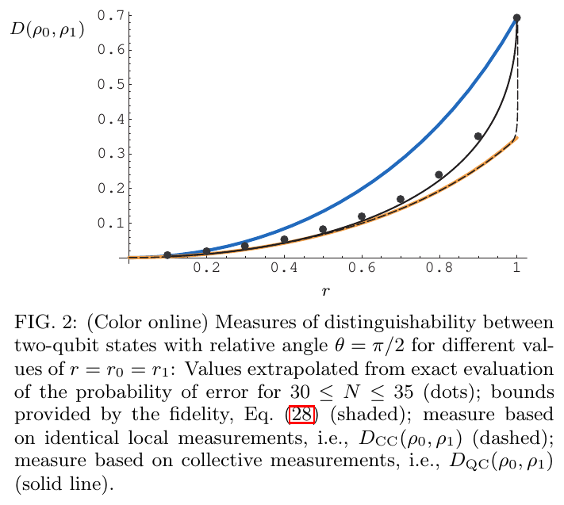
Nguồn: Calsamiglia et al., arXiv:0708.2343 (2008), Fig. 2, tr. 12
- \(r\)độ dài vectơ Bloch
Với \(r=0{,}8\): \(\lambda=0{,}9;\,0{,}1\), \(Q=\tfrac12(1+0{,}6)=0.8\), \(s^*=0.5\), \(\xi=0.2231\).
| N | \(P_e\) đúng | cận \(\tfrac12Q^N\) |
|---|---|---|
| 1 | 0.2172 | 0.4 |
| 2 | 0.175 | 0.32 |
| 3 | 0.1118 | 0.256 |
| 5 | 0.06135 | 0.1638 |
| 7 | 0.03483 | 0.1049 |
Chuỗi fidelity kẹp tốc độ mũ
- \(F\)bình phương của fidelity kiểu Uhlmann gốc
| đại lượng | giá trị (qubit r=0,8, 90°) |
|---|---|
| \(\mathrm{Tr}|\sqrt\rho\sqrt\sigma|\) | 0.8246 |
| \(F=\mathrm{Tr}|\cdot|^{2}\) | 0.68 |
| \(-\tfrac12\ln F\) | 0.1928 |
| \(\xi_{QCB}=-\ln Q\) | 0.2231 |
| \(-\ln F\) | 0.3857 |
Số đúng nằm giữa hai đầu: \(0.193\le0.223\le0.386\) (Calsamiglia et al., Eq. (28), tr. 6).
Số bản sao đủ để đạt lỗi đích
| hệ | \(\xi_{QCB}\) | \(N_{\min}\) |
|---|---|---|
| qubit r=0,8 | 0.2231 | 28 |
| FSO \(\sigma_R^2=1\) | 0.661 | 10 |
| BPSK thuần \(\bar n=0{,}5\) | 2.0 | 4 |
Ví dụ qubit: \(N\ge6.215/0.2231=27.85\), làm tròn lên \(28\).
Trạng thái Gauss nhiệt: công thức đóng
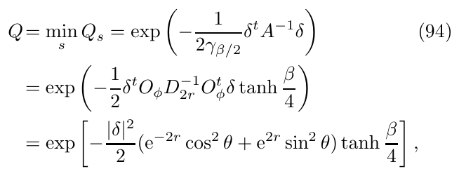
Nguồn: Calsamiglia et al., arXiv:0708.2343 (2008), Eq. (94), tr. 14
- \(n_{th}\)số photon nhiệt trung bình
- \(\beta\)nhiệt độ nghịch đảo
Khi \(n_{th}\to0\): \(\tanh\to1\) và \(Q\to e^{-4\alpha^2}\), khớp BPSK thuần. Bảng cho \(\alpha=0.7\):
| \(n_{th}\) | \(Q\) | \(\xi\) |
|---|---|---|
| 0.0 | 0.1409 | 1.96 |
| 0.05 | 0.2843 | 1.258 |
| 0.1 | 0.3493 | 1.052 |
| 0.5 | 0.5914 | 0.5252 |
| 1.0 | 0.7144 | 0.3363 |
Kênh FSO Gamma-Gamma: Q từ trạng thái hỗn hợp
- \(I_k,w_k\)nút và trọng số theo phân bố Gamma-Gamma (Gauss-Legendre theo \(\ln I\))
- \(x_m,\omega_m\)nút Gauss-Hermite cho nhiễu
| \(\sigma_R^2\) | \(Q\) | \(\xi\) | cận dưới | \(P_e\) Helstrom | cận trên |
|---|---|---|---|---|---|
| 0.2 | 0.4275 | 0.8499 | 0.04798 | 0.09179 | 0.2137 |
| 1.0 | 0.5164 | 0.661 | 0.07181 | 0.122 | 0.2582 |
| 2.0 | 0.5526 | 0.5932 | 0.08327 | 0.1361 | 0.2763 |
Trung bình hoá fading làm Q tăng
- \(\mathbb E_I[\cdot]\)kỳ vọng theo phân bố Gamma-Gamma, \(\mathbb E[I]=1\)
| đại lượng (\(\sigma_R^2=1\), \(\bar n=0{,}5\)) | Q |
|---|---|
| \(e^{-4\bar n}\) (không fading) | 0.1353 |
| \(\mathbb E_I[e^{-4\bar nI}]\) | 0.2717 |
| \(Q(\bar\rho_0,\bar\rho_1)\) (gồm cả nhiễu) | 0.3764 |
Hai quy ước fidelity: bẫy hệ số 2
| quy ước | giá trị \(F\) | đầu dưới | đầu trên |
|---|---|---|---|
| Audenaert | 0.8246 | 0.1928 | 0.3857 |
| Calsamiglia | 0.68 | 0.1928 | 0.3857 |
Đo cố định một cơ sở thì mất nửa tốc độ
| phép đo | Q | \(\xi\) | \(s^*\) |
|---|---|---|---|
| tập thể (tối ưu) | 0.8 | 0.2231 | 0.5 |
| \(\sigma_z\) từng bản sao | 0.8937 | 0.1124 | 0.458 |
Qubit \(r=0{,}8\), \(90^\circ\): đo cơ sở cố định chỉ đạt \(0.112\) so với \(0.223\) (Calsamiglia et al., Fig. 2, tr. 12: \(D_{CC}\lt D_{QC}\)).
Hình học Uhlmann và metric Chernoff
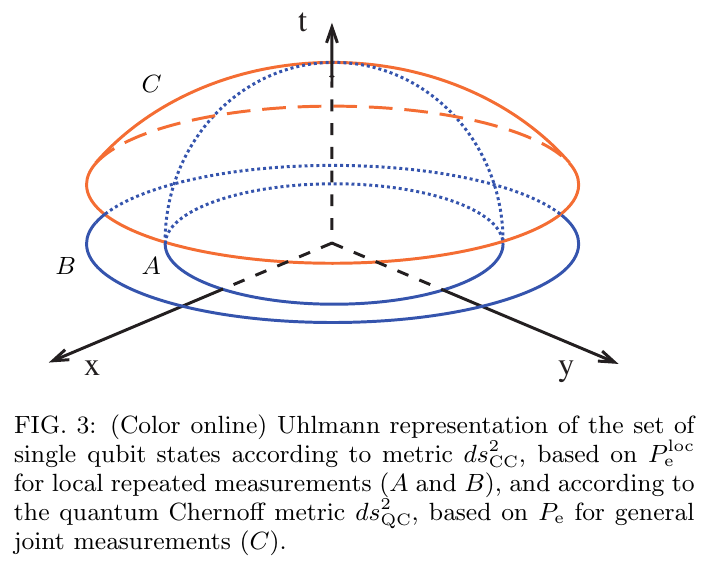
Nguồn: Calsamiglia et al., arXiv:0708.2343 (2008), Fig. 3, tr. 13
Với hai qubit cùng độ tinh khiết \(r\) và góc \(\theta=\pi/2\), tác giả so \(D_{QC}\), \(D_{CC}\) và các cận fidelity. Khi \(r\to1\) cả hai tiến về \(-\ln F=\ln2\approx0{,}693\); tính lại: \(\xi_{QCB}(r=1)=0.6931\), \(\xi_{QCB}(r=0{,}8)=0.2231\).
Cận chỉ đúng về mũ: hằng số và kích thước ma trận
| \(\sigma_R^2\) | \(P_e\) (N=1) | cận \(\tfrac12Q\) | tỉ số | \(P_e\) (N=2) | cận \(\tfrac12Q^2\) |
|---|---|---|---|---|---|
| 0.2 | 0.09179 | 0.2137 | 2.33 | 0.03021 | 0.09136 |
| 1.0 | 0.122 | 0.2582 | 2.12 | 0.0494 | 0.1333 |
| 2.0 | 0.1361 | 0.2763 | 2.03 | 0.05941 | 0.1527 |
Dòng thời gian từ Chernoff đến Calsamiglia
Mốc lấy từ danh mục tài liệu của Audenaert et al., arXiv:quant-ph/0610027 (2007) và Calsamiglia et al., arXiv:0708.2343 (2008). Nét đứt: ảnh hưởng ý tưởng; nét liền: phụ thuộc trực tiếp. Công thức: \(P_e\sim e^{-N\xi_{QCB}}\), \(\xi_{QCB}=-\ln\min_s\mathrm{Tr}\rho_0^s\rho_1^{1-s}\).
Quy trình tính Q cho một kênh bất kỳ
- Dựng \(\bar\rho_0,\bar\rho_1\) (cầu phương) rồi chuẩn hoá \(\mathrm{Tr}=1\).
- Chéo hoá: \(\bar\rho_0=V\Lambda V^{\dagger}\), \(\bar\rho_1=W M W^{\dagger}\), lập \(D_{ij}=|\langle v_i|w_j\rangle|^2\).
- Cực tiểu hoá theo \(s\in(0,1)\) (hàm lồi, dò tam phân).
- Đọc \(\xi=-\ln Q\) và hai cận \(\tfrac12(1-\sqrt{1-Q^2})\), \(\tfrac12Q\).
Ba thước đo: Helstrom, Chernoff, fidelity
| thước đo | chi phí | cho biết | giới hạn |
|---|---|---|---|
| Helstrom | \(O(d^{3N})\) | \(P_e\) đúng | \(N\) nhỏ |
| \(Q\) | \(O(d^{3})\) | tốc độ mũ chính xác | cận trên lỏng ở \(N\) nhỏ |
| Fidelity | \(O(d^{3})\) | khoảng cho tốc độ | khoảng rộng gấp đôi |
Thực hành: Helstrom làm nhãn oracle cho \(N\) nhỏ, \(Q\) kiểm tra tốc độ giảm khi \(N\) lớn, fidelity dùng để ước nhanh.
Ứng dụng: ngân sách photon cho liên kết FSO
- \(N\bar n\)tổng số photon trung bình cho một bit
| \(\varepsilon\) | \(N\bar n\) | \(N\ (\bar n=0{,}5)\) |
|---|---|---|
| 0.01 | 0.978 | 2 |
| 0.001 | 1.554 | 4 |
| 1e-04 | 2.129 | 5 |
Tổng kết: công thức cần nhớ
- Chứng minh gồm hai nửa: cận trên (Audenaert) và cận dưới (Nussbaum, Szkoła).
- Với FSO, hãy lấy trung bình trạng thái trước rồi mới tính Q.
- Kiểm quy ước fidelity trước khi chép công thức.
Nội dung chi tiết
Bối cảnh lý thuyết và lịch sử
Chernoff (1952) chứng minh lỗi phát hiện giữa hai phân bố giảm theo \(e^{-NC}\). Với trạng thái lượng tử, Helstrom (1976) cho lỗi tối ưu một bản sao, nhưng \(N\) bản sao đòi hỏi chuẩn vết của ma trận \(d^N\times d^N\). Ogawa và Hayashi (2004) nêu giả thuyết về dạng của tốc độ mũ; Nussbaum và Szkoła chứng minh cận dưới, Audenaert và cộng sự chứng minh cận trên, hai bài cùng cho \(\xi_{QCB}=-\ln\min_s\mathrm{Tr}\rho_0^s\rho_1^{1-s}\). Calsamiglia và cộng sự (2008) áp dụng cho qubit và trạng thái Gauss.
Nói nôm na, kỹ thuật, bảng, phép tính
Nôm na: gửi cùng một tin nhiều lần thì đoán đúng dễ hơn, và Q cho biết "mỗi lần gửi thêm giúp được bao nhiêu". Kỹ thuật: \(Q=\min_s\sum_{ij}\lambda_i^s\mu_j^{1-s}|U_{ij}|^2\). Bảng: các bảng ở phần 3. Phép tính: xem các ví dụ dưới.
Hai máy dập xu cho xác suất ngửa \(p=0{,}3\) và \(q=0{,}6\) (giả định). Ngưỡng \(\xi=0.4467\), \(C=0.04771\). Sau 100 lần tung, \(\tfrac12e^{-100C}=0.00424\) còn \(P_e\) đúng \(=9.84e-04\): cận lớn hơn 4.31 lần nhưng cùng mũ.
\(\bar n=0{,}5\): \(Q=e^{-2}=0.1353\). Một xung: \(P_e=\tfrac12(1-\sqrt{1-Q})=0.03506\). Hai xung: \(\tfrac12(1-\sqrt{1-Q^2})=0.0046\), cận \(\tfrac12Q^2=0.009158\).
Hai trạng thái ghi trong qubit với \(r=0{,}8\), lệch \(90^\circ\). \(\lambda=0{,}9;0{,}1\); \(Q=\tfrac12(\sqrt{0{,}9}+\sqrt{0{,}1})^2=0.8\); \(\xi=0.2231\). Cần \(N\ge\ln500/0.2231\), tức \(28\) bản sao để lỗi dưới \(10^{-3}\).
\(\alpha=0{,}7\), \(n_{th}=0{,}1\): \(\beta=\ln11=2{,}398\), \(\tanh(\beta/4)=0.5367\), \(Q=\exp(-1{,}96\cdot0.5367)=0.3493\). Không nhiễu \(Q=e^{-1{,}96}=0.1409\).
\(\sigma_R^2=1\), \(\bar n=0{,}5\): \(e^{-2}=0.1353\); \(\mathbb E[e^{-2I}]=0.2717\); \(Q\) trạng thái hỗn hợp \(=0.3764\). Từ \(Q=0.5164\) có \(\xi=0.661\), lỗi Helstrom \(0.122\) nằm giữa \(0.07181\) và \(0.2582\).
Case study và bẫy khi làm bài
Case: Calsamiglia et al. so \(D_{QC}\), \(D_{CC}\) và cận fidelity trên Fig. 2 (tr. 12) và thấy đo từng bản sao giống nhau kém tập thể. Bẫy: (1) quên hệ số \(\tfrac12\) ở \(\tfrac12Q^N\); (2) nhầm \(|\alpha|\) với \(|\alpha|^2\) trong \(e^{-4|\alpha|^2}\); (3) nhầm quy ước fidelity; (4) lấy trung bình \(Q\) thay vì trung bình trạng thái.
Thực hành tương tác
Tự kiểm tra nhanh
Luyện tập sâu
Mở ngân hàng 45 câu trắc nghiệm và 5 bài viết code →
Tài liệu tham khảo
- K. M. R. Audenaert et al., The quantum Chernoff bound, Phys. Rev. Lett. 98, 160501, 2007.
- M. Nussbaum, A. Szkoła, The Chernoff lower bound for symmetric quantum hypothesis testing, Ann. Statist. 37(2), 1040-1057, 2009.
- J. Calsamiglia et al., arXiv:0708.2343, 2008.
- H. Chernoff, Ann. Math. Statist. 23, 493, 1952.
- C. W. Helstrom, Quantum Detection and Estimation Theory, Academic Press, 1976.